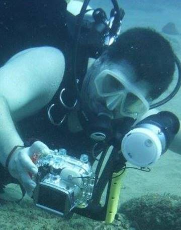

Photographers / contributors
I thought it would be fitting to have a page about the people who contributed to the site.

Riaan Marx
I have been taking photos of nudibranchs since before 2000. I am a software developer by trade and after another set of name changes not reflected by my old books, decided to implement something like an online flip-file. I got this idea from Colin Ogden's laminated thubmnail pages he used to bring to the beach every morning. Maintaining this site will pretty much be my responsibility, but I rely heavily on friends sending me photos and the web to identify the little critters.
Pieter Laubscher
Pieter started working at Amoray dive operator, Sodwana Bay many years ago. He knows the reefs like the back of his hands and we have spent many hours underwater together. Pieter is a great underwater photographer and is a regular feature on the podium at the annual Sodwana Shootout photography competition. More recently, Pieter has taken the reigns at Amoray and is managing the day to day operations of the company. He still manages to dive often though and is graciously sharing many of his nudibranch photos for us to host here.

Colin Ogden
Colin started Amoray, Sodwana Bay many years ago after leaving the corporate world for something a bit more civilized. He is the local expert on all things nudibranch and has started compiling his own photographic identification guide to nudibranchs of Sodwana Bay. He has collected thousands of photos over the years and although he has since sold the company, is still very much the resident "nudi-nut".